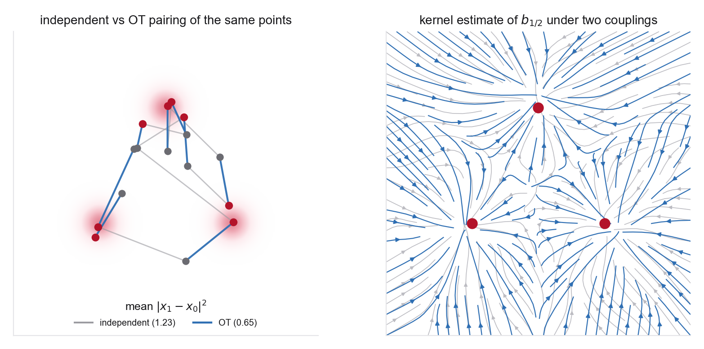

- The marginalization trick and conditional/marginal loss-gradient identity (Week 3 Problem 1)
- The interpolant velocity as a conditional expectation (Week 4 Problem 1)
- That deterministic ODE trajectories cannot cross (Week 1)
- Convex functions and their gradients (for Brenier's theorem)
- The continuity equation (Weeks 1, 3, 4)
- Tong et al. (OT-CFM), §3.1 for the coupling generalization of CFM
- Peyré & Cuturi, §2.1-2.3 (Kantorovich and assignments), Theorem 2.1 in §2.5 (Brenier), Remark 7.1 with Eq. (7.6) (displacement interpolation), and §7.1 (Benamou-Brenier)
- Liu et al. (Rectified Flow), §2.2 for reflow and the straightness functional; the results themselves are §3.1 Theorem 3.3, §3.2 Theorem 3.5, §3.3 Theorem 3.7, and §3.4 Theorems 3.8 and 3.10
- Week 4 Problem 1 part 6 for the same coupling-invariance argument on the velocity
This problem separates three quantities that are easy to conflate. A valid coupling fixes the prescribed endpoint laws but changes the induced marginal path. Quadratic OT minimizes conditional endpoint displacement. The marginal kinetic action is smaller by a conditional-velocity-variance term. Reflow can straighten its own model-induced coupling without generally solving the quadratic OT problem. Nothing here trains a network; finite-model and finite-solver claims are measured later rather than inferred from endpoint cost.
Convention. Base/noise at \(t=0\) and data at \(t=1\). A coupling is a joint law \(\pi\in\Pi(\rho_0,q)\), meaning its first marginal is the base \(\rho_0\) and its second is the data \(q\); write \((x_0,x_1)\sim\pi\). The independent coupling is \(\pi_{\mathrm{ind}}=\rho_0\otimes q\). Work on \(\mathbb R^d\) with \(\rho_0,q\in\mathcal P_2(\mathbb R^d)\), and take the squared-Euclidean cost \(c(x_0,x_1)=\|x_1-x_0\|^2\) throughout. Unless a part says otherwise, set \[ X_t=(1-t)X_0+tX_1,\qquad V=X_1-X_0,\qquad \mu_t=\operatorname{Law}(X_t), \] and let \(b_t(x)=\mathbb E_\pi[V\mid X_t=x]\) denote a \(\mu_t\)-almost-everywhere version of the conditional expectation. Let \(T\sim\operatorname{Unif}[0,1]\) be independent of \((X_0,X_1)\).
Two conventions matter for rigour, and parts of this problem turn on them. First, finite second moments buy less than they appear to. They make \(X_t\) and \(b_t(X_t)\) square-integrable and make the continuity equation hold in the distributional sense, meaning \[ \frac{\mathrm d}{\mathrm dt}\int\varphi\,\mathrm d\mu_t=\int\nabla\varphi\cdot b_t\,\mathrm d\mu_t \qquad\text{for all }\varphi\in C_c^\infty(\mathbb R^d). \] They do not imply that \(\mu_t\) has a density, that \(b_t\) is continuous or Lipschitz, or that \(\dot Z_t=b_t(Z_t)\) has a unique flow. Whenever a claim concerns a classical deterministic ODE flow rather than the continuity equation alone, assume enough measurability in \(t\), local Lipschitz regularity in \(x\), and integrable growth bounds for global well-posedness, and say so. Second, part 1 extends to any absolutely continuous interpolant with square-integrable velocity, while parts 2-5 need the constant-speed linear interpolant above. All velocity identities are understood \((\mathrm dt\otimes\mu_t)\)-almost everywhere.

- A coupling fixes the marginals and the objective. Let \(\pi\in\Pi(\rho_0,q)\) be any coupling. Show that \(\mu_0=\rho_0\) and \(\mu_1=q\), and that \(b_t\) solves the continuity equation \(\partial_t\mu_t+\nabla\!\cdot(\mu_t b_t)=0\) in the distributional sense of the convention above. Then consider \[ \mathcal L_{\rm CFM}(f)=\mathbb E\big\|f(T,X_T)-V\big\|^2. \] Show that over the unrestricted class of square-integrable fields \(f\), the minimizer is \(b\), and that it is unique only up to \((\mathrm dt\otimes\mu_t)\)-null sets. A neural-network family is a restricted class, so training returns an approximation to \(b\) rather than \(b\) itself, and you should say where that distinction enters. The one line to identify is where the argument used independence, and why the answer is "nowhere," since only the endpoint marginals of \(\pi\) enter. Show also that the corresponding marginal FM loss differs by an \(f\)-independent constant. State the additional regularity, population optimum, model, optimization, and integration assumptions needed before concluding that a trained ODE generates \(q\). Include the endpoint subtlety: if \(\rho_0\) is absolutely continuous but \(q\) is discrete, no regular invertible flow maps \(\rho_0\) onto \(q\) at a finite time, so either assume enough regularity of both endpoint laws or reach \(q\) only as a limit at \(t=1\).
- Path energy is transport cost. For the constant-speed linear interpolant \(\dot X_t=V\) along each conditional path, so the per-pair kinetic energy is \[ \int_0^1\|\dot X_t\|^2\,\mathrm dt=\|X_1-X_0\|^2, \] and its expectation is the transport cost \(\mathcal C(\pi)=\mathbb E_\pi\|X_1-X_0\|^2\). Define the Eulerian action and the ambiguity \[ \mathcal A(\mu,b)=\int_0^1\!\!\int\|b_t(x)\|^2\,\mathrm d\mu_t(x)\,\mathrm dt, \qquad \mathcal R(\pi)=\int_0^1\mathbb E\big\|V-\mathbb E[V\mid X_t]\big\|^2\,\mathrm dt. \] Prove the exact identity \[ \mathcal C(\pi)=\mathcal A(\mu,b)+\mathcal R(\pi), \] which is stronger than the inequality \(\mathcal A\le\mathcal C\) and gives it immediately. (Hint: condition on \((T,X_T)\) and use the orthogonality of the conditional mean, so that \(\mathbb E\|f(T,X_T)-V\|^2=\mathbb E\|f(T,X_T)-b_T(X_T)\|^2+\mathcal R(\pi)\) for any square-integrable \(f\). Part 1 is the same computation.) State the equality condition correctly: \(\mathcal A=\mathcal C\) holds exactly when \(V=b_t(X_t)\) for \((\mathrm dt\otimes\pi)\)-almost every \((t,x_0,x_1)\), not for every \(t\) and every pair. Interpret \(\mathcal R(\pi)\) as conditional-velocity ambiguity and as the Bayes regression residual for the fixed coupling \(\pi\). Then give the translation counterexample explicitly. Take \(q=(\tau_a)_\#\rho_0\) and \(X_1=X_0+a\), so that \(\mathcal C(\pi)=\|a\|^2\) is arbitrarily large while \(b_t\equiv a\), \(\nabla_x b_t=0\) and \(\ddot X_t=0\). Endpoint cost is therefore neither curvature nor stiffness.
- For straight conditional paths, non-crossing removes velocity ambiguity. The informal
phrase "no two paths meet" is not usable as stated, because for continuous laws two independently sampled
paths hit the same point with probability zero, which would make the hypothesis vacuous. Use instead the
following. Call \(\pi\) essentially non-crossing if it is concentrated on a Borel set
\(\Gamma\subset\mathbb R^d\times\mathbb R^d\) such that for every \(t\in(0,1)\), whenever
\((1-t)x_0+tx_1=(1-t)x_0'+tx_1'\) for two pairs of \(\Gamma\), then \(x_1-x_0=x_1'-x_0'\). Equivalently,
\(F_t(x_0,x_1)=(1-t)x_0+tx_1\) is injective on \(\Gamma\) up to duplicated endpoint pairs, since the state
and the velocity together determine both endpoints. Show that then the conditional law of \(V\) given
\(X_t\) is a point mass, so \(\operatorname{Var}(V\mid X_t)=0\) and \(\mathcal R(\pi)=0\). Conclude that
the conditional segments are integral curves of \(b\), and that if the ODE for \(b\) has unique
solutions, those segments are its trajectories and are straight at constant speed. Without that uniqueness
assumption you may not identify them with the marginal trajectories, and note that non-crossing is not the
same as straightness in general, since a curved ODE flow is perfectly non-crossing.
Now the converse, where the tempting statement is that an independent coupling has nonzero conditional velocity variance. Resist it and show why it is false as stated. Take \(\widehat\rho_0\) and \(\widehat q\) to be equal-weight empirical measures on \(n\) generic points each, with the product coupling. Show that \(F_t\) is injective on the \(n^2\) product pairs for all but finitely many \(t\), hence \(\operatorname{Var}(V\mid X_t)=0\) for Lebesgue-almost every \(t\), even under independence. That is exactly the regime the figure above depicts, which is why its right panel is a kernel estimate rather than an exact conditional expectation. Then do it properly in the continuum. Let \(X_0,X_1\overset{\mathrm{iid}}{\sim}N(0,I_d)\) and compute, by Gaussian conditioning, \[ \operatorname{Cov}(V\mid X_t)=\frac{1}{(1-t)^2+t^2}\,I_d, \] which is positive definite for every \(t\in[0,1]\) and largest at \(t=\tfrac12\). Independence produces ambiguity here because the endpoint laws are nondegenerate, not because independence forces it in general.
Finally, connect this to ODE uniqueness at a genuine equal-time state conflict. Explain why ordinary intersections of two line segments drawn in space need not be equal-time conflicts and therefore are only a visual heuristic. - Quadratic OT induces constant-speed displacement interpolation. Define the (static, Kantorovich) optimal-transport problem, and write the minimizer with \(\in\), because before any absolute-continuity assumption the arg min is a set, \[ \pi^\star\in\operatorname*{arg\,min}_{\pi\in\Pi(\rho_0,q)}\ \int\|x_1-x_0\|^2\,\mathrm d\pi(x_0,x_1). \] Quote Brenier's theorem. For the squared cost with \(\rho_0\) absolutely continuous and both laws in \(\mathcal P_2\), \(\pi^\star\) is unique and supported on the graph of a map \(x_1=T(x_0)=\nabla\phi(x_0)\) with \(\phi\) convex, so \(\pi^\star=(\operatorname{Id},T)_\#\rho_0\). Now make the injectivity argument explicit rather than asserting it. Set \(\psi_t(x)=\tfrac{1-t}{2}\|x\|^2+t\,\phi(x)\), so that \(\psi_t\) is \((1-t)\)-strongly convex and \(F_t=(1-t)\operatorname{Id}+tT=\nabla\psi_t\) where the gradients exist. Deduce \(\langle F_t(x)-F_t(y),x-y\rangle\ge(1-t)\|x-y\|^2\), which gives injectivity for \(t<1\) and shows why the argument says nothing at \(t=1\), where several source points may share a terminal image if \(q\) has atoms. Conclude that the OT coupling induces the displacement interpolation \(x_t=(1-t)x_0+t\,T(x_0)\). Contrast this continuous theorem with equal-weight empirical OT. For \(\widehat\rho_0=\tfrac1n\sum_i\delta_{x_i}\) and \(\widehat q=\tfrac1n\sum_j\delta_{y_j}\) with the same \(n\), the Birkhoff polytope argument shows an optimal permutation plan exists. It need not be unique when the cost matrix has ties, and tied problems also admit optimal non-permutation convex combinations. Finally, state the dynamic (Benamou-Brenier) form, and note that the endpoint constraints are part of the problem rather than decoration, \[ W_2^2(\rho_0,q)=\inf_{\mu_t,v_t}\int_0^1\!\!\int\|v_t(x)\|^2\,\mathrm d\mu_t(x)\,\mathrm dt \quad\text{s.t.}\quad \partial_t\mu_t+\nabla\!\cdot(v_t\mu_t)=0,\quad \mu_0=\rho_0,\ \mu_1=q, \] and explain in two sentences why its minimizer is the same displacement interpolation and its velocity is the field an ideal OT-coupled FM construction recovers. State that the static and dynamic problems are equivalent formulations of \(W_2^2\), not Legendre duals.
- Reflow optimizes a different notion of straightness. Given a current learned flow, sample \(x_0\), integrate it to a generated endpoint \(z_1=\Phi^{(k)}_{0\to1}(x_0)\), and retrain on the induced pairs \((x_0,z_1)\). Write the flow map as \(\Phi^{(k)}_{0\to1}\) rather than \(T^{(k)}\), since \(T\) already denotes the Brenier map from part 4. In the ideal rectification analysis, quote the theorem that rectification does not increase \(\mathbb E[c(Z_1-Z_0)]\) for convex \(c:\mathbb R^d\to\mathbb R\) with the relevant expectations finite. Note the scope, because it is easy to overstate: \(c\) is a convex function of the endpoint displacement, not an arbitrary jointly convex \(c(Z_0,Z_1)\). Then write the straightness functional explicitly, \[ S(Z)=\int_0^1\mathbb E\big\|\dot Z_t-(Z_1-Z_0)\big\|^2\,\mathrm dt, \] and say what it is. It is a chord-velocity defect, not a curvature functional such as \(\int\|\ddot Z_t\|^2\,\mathrm dt\). Next locate the paper's explicit caveat, that recursive rectification is not guaranteed to attain a \(c\)-optimal coupling outside a special one-dimensional result. Note that "not guaranteed to attain" is the accurate reading; the paper does not exhibit divergence. Explain separately why learned-flow error may prevent the generated endpoint marginal from equaling \(q\), and keep the two endpoint laws apart. Exact reflow acts on a flow whose endpoint law is already \(q\), so rectification preserves \(q\). An approximate learned flow has some endpoint law \(\widetilde q_k\neq q\), and retraining on its generated pairs targets \(\widetilde q_k\). Conclude by contrasting OT-CFM's chosen endpoint-cost optimization with reflow's model-induced recursion.